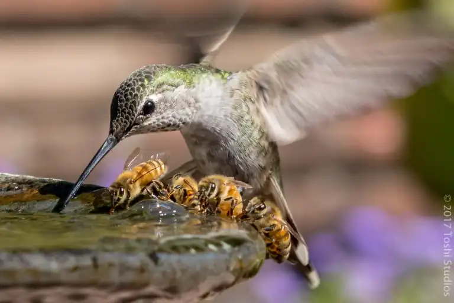

Why I made this website

I have always thought of posting, but never did. I’m not sure what to post. What I am kind of sure about is that I want to start each post with an image I like.
So here is a hummingbird and four bees sharing a drinking fountain. There is something fascinating about that photo. Will I order a print? Who knows.
Getting this Jekyll blog live will be a great testament to me actually following through with this blog thingamajig.
After meddling with Hyde for a while, I got kind of worn out. I was doing all these tweaks and changes and it never stopped because it’s kind of an old theme, so there is much to do in that regard.
Instead, I opted to create a blank blog. Why not? I can add just what I want and not a bit more.